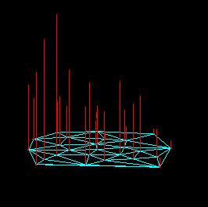

Random 2D points, Delaunay triangulation, and (dual) Dirichlet tesselation.
A spline curve: with B-spline & Bezier
control polygons, normal vectors, and under tension.
Demonstrating the linear combination of basis functions for a Bezier curve.
Splines (approx and interp) on a sphere.
Random 2D points, Delaunay triangulation, and (dual) Dirichlet tesselation.

F(x,y), Hardy surface interpolant, Shephard surface interpolant.